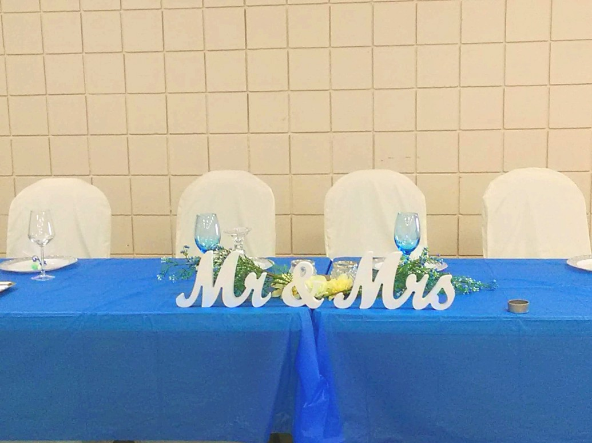
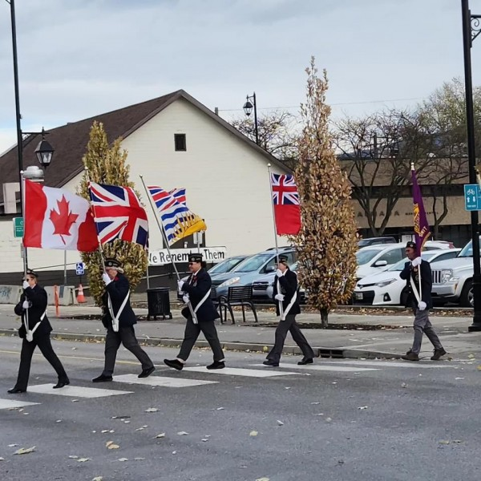
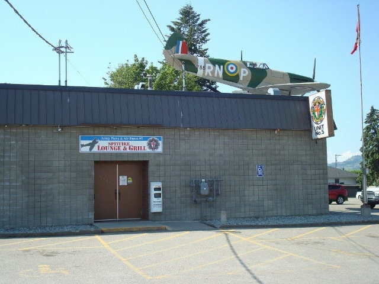

Spitfire Grill et salon
Venez manger le midi, jouer au billard ou aux fléchettes, ou profiter de la terrasse couverte. Repas à emporter offerts. Appelez le Grill pour connaître les heures du jour.
Un club de vétérans à Vernon (C.-B.)
L’unité Spitfire no 5 réunit les vétérans, les familles et les gens du quartier autour d’un repas, d’une sortie ou d’une activité au profit de la collectivité.

Au service de VernonDepuis 1971
Au club
Venez manger le midi, jouer au billard ou aux fléchettes, ou profiter de la terrasse couverte. Repas à emporter offerts. Appelez le Grill pour connaître les heures du jour.

Louez notre salle avec permis d’alcool pour un mariage, une fête ou une réunion. Elle offre une scène, une piste de danse, un accès de plain-pied et du stationnement gratuit. Informez-vous sur les disponibilités et le service de traiteur.

L’unité no 5 accueille les vétérans, les personnes admissibles ayant servi et les membres de la collectivité. Communiquez avec nous pour connaître votre catégorie d’adhésion et la marche à suivre.
Événements et vie communautaire
Consultez la programmation du club pour les soirées dansantes, les événements spéciaux et les tirages de viande du samedi. Les recettes des tirages soutiennent des organismes de bienfaisance et des groupes communautaires de la région.

Notre histoire
L’unité no 5 est au service de Vernon depuis 1971. Ses membres ont construit la réplique grandeur nature qui surplombe le club. Ses marques reprennent celles consignées dans le carnet de vol de Philip Bodnarchuk, vétéran de Vernon et pilote de l’Aviation royale canadienne.
Lire l’article du Musée de VernonLe club se trouve en face de Home Hardware. Appelez-nous ou écrivez-nous au sujet de l’adhésion, des événements ou de la location de la salle The Hanger.
2500, 46e Avenue, Vernon (C.-B.) V1T 8S2